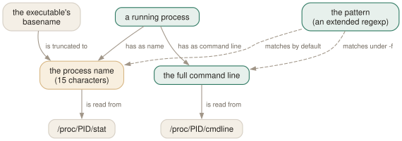

Day 02
Name or command line
Fifteen characters, an extended regexp, and the trap inside -f.
By the end of today you can
- say which of two strings a given invocation is matching, and where the kernel keeps it
- recognise the fifteen-character wall from the symptom rather than from the error message
- write a
-fquery inside a script without the script matching itself
Two strings, and the short one is the default
A process offers pgrep exactly two pieces of text to match against, and they live in different files, obey different rules and fail in different ways. Nearly every "pgrep cannot find my process" is really "pgrep was looking at the other one".
The default is the process name, the second field of /proc/PID/stat, also exposed as /proc/PID/comm. The kernel fills it in from the basename of the executable, and a program may change its own — bash sets it to the script it is running, which is why a shell script has a useful name at all.
The alternative, selected with -f, is the full command line from /proc/PID/cmdline: the argument vector as the process was started, stored NUL-separated and joined with single spaces before matching. Read both yourself for any process on your machine and the distinction stops being abstract:
$ cat /proc/269399/comm
mybackup.sh
$ tr '\0' ' ' < /proc/269399/cmdline
/bin/bash ./mybackup.sh

The fifteen-character wall
The name field is sixteen bytes wide in the kernel, one of which is the terminator. Fifteen usable characters, no configuration, no exceptions. A process whose executable is called a-very-long-script-name.sh is called a-very-long-scr as far as the default matching mode is concerned.
$ pgrep a-very-long-script-name.sh
pgrep: pattern that searches for process name longer than 15 characters will result in zero matches
Try `pgrep -f' option to match against the complete command line.
$ pgrep a-very-long-scr
269411
$ pgrep -a -f a-very-long-script-name.sh
269411 /bin/bash ./a-very-long-script-name.sh
The pattern is a regexp, and it floats
The operand is an extended regular expression — regex(7), the same dialect as grep -E — and it is matched unanchored. pgrep systemd means "contains systemd anywhere", which is why it finds systemd-logind and systemd-udevd along with systemd itself.
$ pgrep -c systemd # unanchored: any name containing 'systemd'
11
$ pgrep -c '^systemd$' # anchored by hand
2
$ pgrep -xc systemd # the same thing, said properly
2
Three refinements, and that is the whole of the matching language:
-x- Anchor to the whole string. Equivalent to wrapping the pattern in
^and$, and clearer than doing so, especially inside a shell where$wants quoting. -i- Case-insensitive. Composes with everything, including -x and -f.
- the ERE itself
- Alternation is how you ask for two things at once, since a second bare pattern is an error:
pgrep 'nginx|apache2'. Quote it —|is a pipe to your shell first.
The trap that ships inside -f
-f widens the haystack from a fifteen-character name to every argument of every process, and the haystack it widens into includes the processes that are running your own query. pgrep never reports itself — that is documented and reliable. It says nothing about your shell, your script, or the sudo you ran them under.
The classic casualty is the single-instance guard. Here is one, in full, and it has never once let the job start:
#!/bin/bash
if pgrep -f backup.sh >/dev/null; then
echo "another instance is already running; exiting"
exit 1
fi
echo "starting"
sleep 400
$ ./backup.sh # nothing else is running
another instance is already running; exiting
The script's own command line is /bin/bash ./backup.sh. It contains the pattern, so the script finds itself, concludes it is a duplicate and exits. The bug survives code review because the code says what the author meant.
The fix is one flag. -A walks the parent chain from the pgrep upwards and removes every ancestor from the result — the script, the shell that ran it, cron, all of them:
$ ./backup.sh # same script, pgrep -A -f backup.sh
starting
$ ./backup.sh # and now one really is running
another instance is already running; exiting
Today's habit
Whenever pgrep -l shows you a name, ask whether it is the whole name. Two keystrokes settle it: -a instead of -l. Over a week this is the difference between trusting the tool and being surprised by it.
And adopt the rule now, while it is cheap: any -f inside a script gets an -A. There is no case where a script wants to match its own ancestors, and writing the two together means you never have to notice the bug.
# Day 2: the command line, not the name - and never my own ancestors.
pgrep -A -f 'python3 .*worker'
New vocabulary
Commands
| Command | Does |
|---|---|
pgrep -f 'python3 .*worker' | Match the full command line, so the interpreter's arguments count. |
pgrep -x systemd | Only processes named exactly systemd — not systemd-logind. |
pgrep -A -f myscript.sh | Match command lines, but ignore every ancestor of this pgrep. |
cat /proc/PID/comm | The 15-character name pgrep matches by default. |
tr '\0' ' ' < /proc/PID/cmdline | The full command line pgrep matches under -f. |
Options
| Option | Does |
|---|---|
-f, --full | Match against the whole command line instead of the process name. |
-x, --exact | Require the pattern to match the whole string, not a part of it. |
-i, --ignore-case | Match case-insensitively. |
-A, --ignore-ancestors | Drop every ancestor of this pgrep from the result. The fix for -f in scripts. |
Drillsdo these in a real terminal, today
Self-check
Answer out loud first, then unfold.
You run pgrep systemd-journald and get nothing, but pgrep -a systemd-journal finds it immediately. What happened, and which of the two is the better habit?
systemd-journald is sixteen characters. The kernel stores a process name in a fixed sixteen-byte field, one byte of which is the terminator, so what /proc/PID/stat reports is systemd-journal — fifteen characters, and your pattern can never match it.
Dropping the last character works but is a trap you have set for your future self. The right habit is pgrep -f systemd-journald, which matches the command line and is immune to the wall. procps is helpful enough to warn you here: a pattern over fifteen characters produces a diagnostic and exit 1, which is one of the few places the binary tells you more than the manual page does.
A cron job runs backup.sh, which begins if pgrep -f backup.sh; then exit 1; fi so that two backups never overlap. It has never once run. Why?
The script is matching itself. Its own command line is /bin/bash /path/to/backup.sh, which contains backup.sh, so the guard fires on the very first invocation. pgrep's rule is that it never reports itself — the pgrep process. Its parent, the script, is fair game, and so is the shell that launched the script.
The fix is -A, which drops every ancestor of the pgrep from the result. Then the first run says "starting" and a genuine second run is still caught.
You know pgrep -x nginx works on your web server. Why does adding -f to it — pgrep -x -f nginx — suddenly find nothing at all?
-x anchors the pattern to whichever string is being matched, and -f changes which string that is. Together they demand that the entire command line be exactly nginx — no path, no arguments. A real nginx command line is nginx: worker process or /usr/sbin/nginx -g daemon off;, so nothing qualifies.
With -f, the string pgrep matches is the argument vector joined with single spaces, so -x is only useful there when you know the invocation exactly — which occasionally you do, and then it is the sharpest query available.
Two processes have the same name in pgrep -l but you are sure they are different programs. How do you find out, and what is the general rule you have just discovered?
pgrep -a prints the command line instead of the name, and the difference will be obvious — typically two python3 processes running different scripts, or two node processes from different projects.
The rule is that the process name belongs to the executable, not to the job. Anything launched through an interpreter, a wrapper, or a language runtime shares its name with every other user of that runtime, which makes the default matching mode nearly useless for exactly the software people most want to find. That is why -f exists and why you will end up using it more than you expect.
Cheat sheet
pgrep NAME # matches /proc/PID/stat comm - 15 CHARACTERS, unanchored ERE
pgrep -f NAME # matches /proc/PID/cmdline - the whole argv, joined by spaces
pgrep -x NAME # anchor: the whole string, not a substring
pgrep -i NAME # case-insensitive
pgrep -A -f NAME # ...and drop my own ancestors. Always use -A with -f in a script.
pgrep 'a|b' # alternation; a second bare pattern is an error
#
# cat /proc/PID/comm <- what plain pgrep sees
# tr '\0' ' ' < /proc/PID/cmdline <- what pgrep -f sees
# systemd-journald and systemd-resolved are BOTH 16 chars: use -f.
Everything through Day 02
Commands
| Command | Does |
|---|---|
pgrep sshd | List the PID of every process whose name matches the ERE sshd. |
pgrep -u root sshd | Two criteria, AND-ed: owned by root and named sshd. |
pgrep -u root,daemon | One criterion, OR-ed: owned by root or by daemon. No pattern at all. |
pgrep 'systemd|cron' | One ERE, two alternatives. Two bare patterns would be an error. |
pgrep --version | Print the procps-ng version this course is checked against. |
pgrep -f 'python3 .*worker' | Match the full command line, so the interpreter's arguments count. |
pgrep -x systemd | Only processes named exactly systemd — not systemd-logind. |
pgrep -A -f myscript.sh | Match command lines, but ignore every ancestor of this pgrep. |
cat /proc/PID/comm | The 15-character name pgrep matches by default. |
tr '\0' ' ' < /proc/PID/cmdline | The full command line pgrep matches under -f. |
Options
| Option | Does |
|---|---|
-c, --count | Print how many processes matched instead of their PIDs. |
--quiet | Print nothing; the exit status is the whole answer. Long form only. |
-f, --full | Match against the whole command line instead of the process name. |
-x, --exact | Require the pattern to match the whole string, not a part of it. |
-i, --ignore-case | Match case-insensitively. |
-A, --ignore-ancestors | Drop every ancestor of this pgrep from the result. The fix for -f in scripts. |